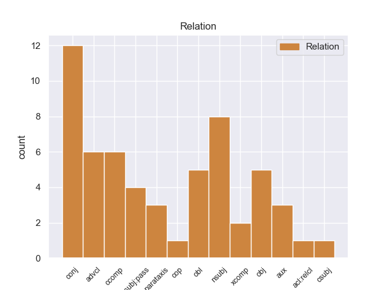
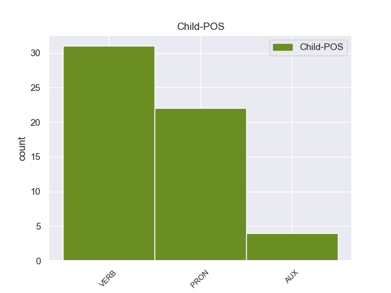

Distribution of features within this leaf



Agreement Rules sorted by frequency.
- When the dependent token is the conjunct(conj) of the head token,
1 Έχουμε _ _ _ _ 0 _ _ _
2 την _ _ _ _ 0 _ _ _
3 απαρέγκλιτη _ _ _ _ 0 _ _ _
4 αρχή _ _ _ _ 0 _ _ _
5 να _ _ _ _ 0 _ _ _
6 μην _ _ _ _ 0 _ _ _
7 διαμορφώνουμε διαμορφώνω VERB VERB Aspect=Imp|Mood=Ind|Number=Plur|Person=1|Tense=Pres|VerbForm=Fin|Voice=Act 0 _ _ _
8 οποιαδήποτε _ _ _ _ 0 _ _ _
9 γνώμη _ _ _ _ 0 _ _ _
10 σχετικά _ _ _ _ 0 _ _ _
11 με _ _ _ _ 0 _ _ _
12 την _ _ _ _ 0 _ _ _
13 ουσία _ _ _ _ 0 _ _ _
14 των _ _ _ _ 0 _ _ _
15 κατηγοριών _ _ _ _ 0 _ _ _
16 , _ _ _ _ 0 _ _ _
17 αλλά _ _ _ _ 0 _ _ _
18 να _ _ _ _ 0 _ _ _
19 θεωρούμε θεωρώ VERB VERB Aspect=Imp|Mood=Ind|Number=Plur|Person=1|Tense=Pres|VerbForm=Fin|Voice=Act 7 conj _ _
20 ότι _ _ _ _ 0 _ _ _
21 οι _ _ _ _ 0 _ _ _
22 βουλευτές _ _ _ _ 0 _ _ _
23 απολαύουν _ _ _ _ 0 _ _ _
24 του _ _ _ _ 0 _ _ _
25 τεκμηρίου _ _ _ _ 0 _ _ _
26 της _ _ _ _ 0 _ _ _
27 αθωότητας _ _ _ _ 0 _ _ _
28 . _ _ _ _ 0 _ _ _
1 Υπάρχει _ _ _ _ 0 _ _ _
2 μια _ _ _ _ 0 _ _ _
3 άλλη _ _ _ _ 0 _ _ _
4 πλευρά _ _ _ _ 0 _ _ _
5 της _ _ _ _ 0 _ _ _
6 υπόθεσης _ _ _ _ 0 _ _ _
7 , _ _ _ _ 0 _ _ _
8 η _ _ _ _ 0 _ _ _
9 οποία οποίος PRON PRON Case=Nom|Gender=Fem|Number=Sing|Person=3|PronType=Rel 13 nsubj _ SpaceAfter=No
10 , _ _ _ _ 0 _ _ _
11 δυστυχώς _ _ _ _ 0 _ _ _
12 , _ _ _ _ 0 _ _ _
13 γεννά γεννώ VERB VERB Aspect=Imp|Mood=Ind|Number=Sing|Person=3|Tense=Pres|VerbForm=Fin|Voice=Act 0 _ _ _
14 την _ _ _ _ 0 _ _ _
15 υποψία _ _ _ _ 0 _ _ _
16 ότι _ _ _ _ 0 _ _ _
17 η _ _ _ _ 0 _ _ _
18 πρόνοια _ _ _ _ 0 _ _ _
19 σχετικά _ _ _ _ 0 _ _ _
20 με _ _ _ _ 0 _ _ _
21 τις _ _ _ _ 0 _ _ _
22 προϋποθέσεις _ _ _ _ 0 _ _ _
23 ελεύθερης _ _ _ _ 0 _ _ _
24 διεξαγωγής _ _ _ _ 0 _ _ _
25 του _ _ _ _ 0 _ _ _
26 κοινοβουλευτικού _ _ _ _ 0 _ _ _
27 έργου _ _ _ _ 0 _ _ _
28 δεν _ _ _ _ 0 _ _ _
29 απασχόλησε _ _ _ _ 0 _ _ _
30 επαρκώς _ _ _ _ 0 _ _ _
31 την _ _ _ _ 0 _ _ _
32 εισαγγελική _ _ _ _ 0 _ _ _
33 αρχή _ _ _ _ 0 _ _ _
34 : _ _ _ _ 0 _ _ _
1 Δεκάδες _ _ _ _ 0 _ _ _
2 χιλιάδες _ _ _ _ 0 _ _ _
3 πολίτες _ _ _ _ 0 _ _ _
4 έμειναν μένω VERB VERB Aspect=Perf|Mood=Ind|Number=Plur|Person=3|Tense=Past|VerbForm=Fin|Voice=Act 0 _ _ _
5 χωρίς _ _ _ _ 0 _ _ _
6 ηλεκτρικό _ _ _ _ 0 _ _ _
7 ρεύμα _ _ _ _ 0 _ _ _
8 την _ _ _ _ 0 _ _ _
9 Τρίτη _ _ _ _ 0 _ _ _
10 , _ _ _ _ 0 _ _ _
11 ενώ _ _ _ _ 0 _ _ _
12 τα _ _ _ _ 0 _ _ _
13 σωστικά _ _ _ _ 0 _ _ _
14 συνεργεία _ _ _ _ 0 _ _ _
15 έδιναν δίνω VERB VERB Aspect=Imp|Mood=Ind|Number=Plur|Person=3|Tense=Past|VerbForm=Fin|Voice=Act 4 advcl _ _
16 μάχη _ _ _ _ 0 _ _ _
17 με _ _ _ _ 0 _ _ _
18 τον _ _ _ _ 0 _ _ _
19 χρόνο _ _ _ _ 0 _ _ _
20 για _ _ _ _ 0 _ _ _
21 τη _ _ _ _ 0 _ _ _
22 διάσωση _ _ _ _ 0 _ _ _
23 ανθρώπων _ _ _ _ 0 _ _ _
24 . _ _ _ _ 0 _ _ _
1 Τη _ _ _ _ 0 _ _ _
2 σφραγίδα _ _ _ _ 0 _ _ _
3 του _ _ _ _ 0 _ _ _
4 εισηγητή _ _ _ _ 0 _ _ _
5 δεν _ _ _ _ 0 _ _ _
6 φέρει _ _ _ _ 0 _ _ _
7 μόνο _ _ _ _ 0 _ _ _
8 η _ _ _ _ 0 _ _ _
9 διαδικασία _ _ _ _ 0 _ _ _
10 χορήγησης _ _ _ _ 0 _ _ _
11 απαλλαγής _ _ _ _ 0 _ _ _
12 και _ _ _ _ 0 _ _ _
13 οι _ _ _ _ 0 _ _ _
14 διάφορες _ _ _ _ 0 _ _ _
15 εκθέσεις _ _ _ _ 0 _ _ _
16 , _ _ _ _ 0 _ _ _
17 αλλά _ _ _ _ 0 _ _ _
18 και _ _ _ _ 0 _ _ _
19 τα _ _ _ _ 0 _ _ _
20 συνακόλουθα _ _ _ _ 0 _ _ _
21 μέτρα _ _ _ _ 0 _ _ _
22 που που PRON PRON Case=Nom|Gender=Neut|Number=Plur|Person=3|PronType=Rel 23 nsubj:pass _ _
23 λήφθηκαν λαμβάνω VERB VERB Aspect=Perf|Mood=Ind|Number=Plur|Person=3|Tense=Past|VerbForm=Fin|Voice=Pass 0 _ _ _
24 κατά _ _ _ _ 0 _ _ _
25 τη _ _ _ _ 0 _ _ _
26 διάρκεια _ _ _ _ 0 _ _ _
27 της _ _ _ _ 0 _ _ _
28 εν _ _ _ _ 0 _ _ _
29 λόγω _ _ _ _ 0 _ _ _
30 διαδικασίας _ _ _ _ 0 _ _ _
31 . _ _ _ _ 0 _ _ _
1 Η _ _ _ _ 0 _ _ _
2 επανάσταση _ _ _ _ 0 _ _ _
3 οδήγησε _ _ _ _ 0 _ _ _
4 σ _ _ _ _ 0 _ _ _
5 τον _ _ _ _ 0 _ _ _
6 άτυχο _ _ _ _ 0 _ _ _
7 Ελληνοτουρκικό _ _ _ _ 0 _ _ _
8 πόλεμο _ _ _ _ 0 _ _ _
9 του _ _ _ _ 0 _ _ _
10 1897 _ _ _ _ 0 _ _ _
11 κατά _ _ _ _ 0 _ _ _
12 τον _ _ _ _ 0 _ _ _
13 οποίο οποίος PRON PRON Case=Acc|Gender=Masc|Number=Sing|Person=3|PronType=Rel 17 obl _ _
14 τα _ _ _ _ 0 _ _ _
15 τουρκικά _ _ _ _ 0 _ _ _
16 στρατεύματα _ _ _ _ 0 _ _ _
17 νίκησαν νικώ VERB VERB Aspect=Perf|Mood=Ind|Number=Plur|Person=3|Tense=Past|VerbForm=Fin|Voice=Act 0 _ _ _
18 κατά _ _ _ _ 0 _ _ _
19 κράτος _ _ _ _ 0 _ _ _
20 τα _ _ _ _ 0 _ _ _
21 αντίστοιχα _ _ _ _ 0 _ _ _
22 ελληνικά _ _ _ _ 0 _ _ _
23 σ _ _ _ _ 0 _ _ _
24 το _ _ _ _ 0 _ _ _
25 Θεσσαλικό _ _ _ _ 0 _ _ _
26 μέτωπο _ _ _ _ 0 _ _ _
27 . _ _ _ _ 0 _ _ _
1 Μια _ _ _ _ 0 _ _ _
2 νέα _ _ _ _ 0 _ _ _
3 σελίδα _ _ _ _ 0 _ _ _
4 την _ _ _ _ 0 _ _ _
5 οποία οποίος PRON PRON Case=Acc|Gender=Fem|Number=Sing|Person=3|PronType=Rel 15 obj _ _
6 η _ _ _ _ 0 _ _ _
7 τουρκικής _ _ _ _ 0 _ _ _
8 καταγωγής _ _ _ _ 0 _ _ _
9 μουσουλμανική _ _ _ _ 0 _ _ _
10 κοινότητα _ _ _ _ 0 _ _ _
11 των _ _ _ _ 0 _ _ _
12 Τατάρων _ _ _ _ 0 _ _ _
13 χρειάστηκε _ _ _ _ 0 _ _ _
14 να _ _ _ _ 0 _ _ _
15 ξαναγράψει ξαναγράφω VERB VERB Aspect=Perf|Mood=Ind|Number=Sing|Person=3|VerbForm=Fin|Voice=Act 0 _ _ _
16 . _ _ _ _ 0 _ _ _
1 Το _ _ _ _ 0 _ _ _
2 Πεκίνο _ _ _ _ 0 _ _ _
3 απέρριψε _ _ _ _ 0 _ _ _
4 τις _ _ _ _ 0 _ _ _
5 κατηγορίες _ _ _ _ 0 _ _ _
6 , _ _ _ _ 0 _ _ _
7 δηλώνοντας _ _ _ _ 0 _ _ _
8 πως _ _ _ _ 0 _ _ _
9 " _ _ _ _ 0 _ _ _
10 οι _ _ _ _ 0 _ _ _
11 ανακοινώσεις _ _ _ _ 0 _ _ _
12 της _ _ _ _ 0 _ _ _
13 Ιαπωνίας _ _ _ _ 0 _ _ _
14 είναι _ _ _ _ 0 _ _ _
15 ενάντια _ _ _ _ 0 _ _ _
16 σ _ _ _ _ 0 _ _ _
17 τα _ _ _ _ 0 _ _ _
18 γεγονότα _ _ _ _ 0 _ _ _
19 " _ _ _ _ 0 _ _ _
20 και _ _ _ _ 0 _ _ _
21 ζήτησε ζητώ VERB VERB Aspect=Perf|Mood=Ind|Number=Sing|Person=3|Tense=Past|VerbForm=Fin|Voice=Act 0 _ _ _
22 από _ _ _ _ 0 _ _ _
23 το _ _ _ _ 0 _ _ _
24 Τόκιο _ _ _ _ 0 _ _ _
25 να _ _ _ _ 0 _ _ _
26 μην _ _ _ _ 0 _ _ _
27 πυροδοτεί πυροδοτώ VERB VERB Aspect=Imp|Mood=Ind|Number=Sing|Person=3|Tense=Pres|VerbForm=Fin|Voice=Act 21 ccomp _ _
28 περαιτέρω _ _ _ _ 0 _ _ _
29 συγκρούσεις _ _ _ _ 0 _ _ _
30 σ _ _ _ _ 0 _ _ _
31 την _ _ _ _ 0 _ _ _
32 Ανατολική _ _ _ _ 0 _ _ _
33 Θάλασσα _ _ _ _ 0 _ _ _
34 της _ _ _ _ 0 _ _ _
35 Κίνας _ _ _ _ 0 _ _ _
36 . _ _ _ _ 0 _ _ _
1 « _ _ _ _ 0 _ _ _
2 Σύμφωνα _ _ _ _ 0 _ _ _
3 με _ _ _ _ 0 _ _ _
4 τις _ _ _ _ 0 _ _ _
5 πηγές _ _ _ _ 0 _ _ _
6 μας _ _ _ _ 0 _ _ _
7 , _ _ _ _ 0 _ _ _
8 ο _ _ _ _ 0 _ _ _
9 ΟΗΕ _ _ _ _ 0 _ _ _
10 θα _ _ _ _ 0 _ _ _
11 θέσει θέτω VERB VERB Aspect=Perf|Mood=Ind|Number=Sing|Person=3|VerbForm=Fin|Voice=Act 0 _ _ _
12 το _ _ _ _ 0 _ _ _
13 νέο _ _ _ _ 0 _ _ _
14 σχέδιο _ _ _ _ 0 _ _ _
15 για _ _ _ _ 0 _ _ _
16 ψήφισμα _ _ _ _ 0 _ _ _
17 την _ _ _ _ 0 _ _ _
18 Δευτέρα _ _ _ _ 0 _ _ _
19 » _ _ _ _ 0 _ _ _
20 , _ _ _ _ 0 _ _ _
21 κατέληξε καταλήγω VERB VERB Aspect=Perf|Mood=Ind|Number=Sing|Person=3|Tense=Past|VerbForm=Fin|Voice=Act 11 parataxis _ _
22 ο _ _ _ _ 0 _ _ _
23 Γκενάντι _ _ _ _ 0 _ _ _
24 Γκατίλοφ _ _ _ _ 0 _ _ _
25 . _ _ _ _ 0 _ _ _
1 Σ _ _ _ _ 0 _ _ _
2 την _ _ _ _ 0 _ _ _
3 παραλία _ _ _ _ 0 _ _ _
4 , _ _ _ _ 0 _ _ _
5 οι _ _ _ _ 0 _ _ _
6 λάτρεις _ _ _ _ 0 _ _ _
7 των _ _ _ _ 0 _ _ _
8 θαλάσσιων _ _ _ _ 0 _ _ _
9 σπορ _ _ _ _ 0 _ _ _
10 μπορούν μπορώ VERB VERB Aspect=Imp|Mood=Ind|Number=Plur|Person=3|Tense=Pres|VerbForm=Fin|Voice=Act 0 _ _ _
11 να _ _ _ _ 0 _ _ _
12 κάνουν κάνω VERB VERB Aspect=Imp|Mood=Ind|Number=Plur|Person=3|Tense=Pres|VerbForm=Fin|Voice=Act 10 xcomp _ _
13 θαλάσσιο _ _ _ _ 0 _ _ _
14 ski _ _ _ _ 0 _ _ _
15 , _ _ _ _ 0 _ _ _
16 jet _ _ _ _ 0 _ _ _
17 ski _ _ _ _ 0 _ _ _
18 , _ _ _ _ 0 _ _ _
19 wind _ _ _ _ 0 _ _ _
20 surfing _ _ _ _ 0 _ _ _
21 , _ _ _ _ 0 _ _ _
22 αλεξίπτωτο _ _ _ _ 0 _ _ _
23 , _ _ _ _ 0 _ _ _
24 καταδύσεις _ _ _ _ 0 _ _ _
25 , _ _ _ _ 0 _ _ _
26 καθώς _ _ _ _ 0 _ _ _
27 και _ _ _ _ 0 _ _ _
28 να _ _ _ _ 0 _ _ _
29 ενοικιάσουν _ _ _ _ 0 _ _ _
30 σκάφη _ _ _ _ 0 _ _ _
31 αναψυχής _ _ _ _ 0 _ _ _
32 . _ _ _ _ 0 _ _ _
1 Αυτό αυτός PRON PRON Case=Nom|Gender=Neut|Number=Sing|Person=3|PronType=Dem 0 _ _ _
2 είναι είμαι AUX AUX Aspect=Imp|Mood=Ind|Number=Sing|Person=3|Tense=Pres|VerbForm=Fin|Voice=Pass 1 cop _ _
3 επειδή _ _ _ _ 0 _ _ _
4 το _ _ _ _ 0 _ _ _
5 κείμενο _ _ _ _ 0 _ _ _
6 δεν _ _ _ _ 0 _ _ _
7 περιέχει _ _ _ _ 0 _ _ _
8 έκκληση _ _ _ _ 0 _ _ _
9 προς _ _ _ _ 0 _ _ _
10 τις _ _ _ _ 0 _ _ _
11 δύο _ _ _ _ 0 _ _ _
12 πλευρές _ _ _ _ 0 _ _ _
13 ( _ _ _ _ 0 _ _ _
14 αντάρτες _ _ _ _ 0 _ _ _
15 και _ _ _ _ 0 _ _ _
16 κυβέρνηση _ _ _ _ 0 _ _ _
17 ) _ _ _ _ 0 _ _ _
18 για _ _ _ _ 0 _ _ _
19 άμεση _ _ _ _ 0 _ _ _
20 κατάπαυση _ _ _ _ 0 _ _ _
21 του _ _ _ _ 0 _ _ _
22 πυρός _ _ _ _ 0 _ _ _
23 » _ _ _ _ 0 _ _ _
24 , _ _ _ _ 0 _ _ _
25 δήλωσε _ _ _ _ 0 _ _ _
26 ο _ _ _ _ 0 _ _ _
27 Γκενάντι _ _ _ _ 0 _ _ _
28 Γκατίλοφ _ _ _ _ 0 _ _ _
29 , _ _ _ _ 0 _ _ _
30 Υφυπουργός _ _ _ _ 0 _ _ _
31 Εξωτερικών _ _ _ _ 0 _ _ _
32 της _ _ _ _ 0 _ _ _
33 Ρωσίας _ _ _ _ 0 _ _ _
34 . _ _ _ _ 0 _ _ _
1 Θα _ _ _ _ 0 _ _ _
2 πρέπει _ _ _ _ 0 _ _ _
3 να _ _ _ _ 0 _ _ _
4 προχωρήσουμε _ _ _ _ 0 _ _ _
5 σ _ _ _ _ 0 _ _ _
6 τη _ _ _ _ 0 _ _ _
7 μεταρρύθμιση _ _ _ _ 0 _ _ _
8 των _ _ _ _ 0 _ _ _
9 δομών _ _ _ _ 0 _ _ _
10 του _ _ _ _ 0 _ _ _
11 Κοινοβουλίου _ _ _ _ 0 _ _ _
12 από _ _ _ _ 0 _ _ _
13 το _ _ _ _ 0 _ _ _
14 βήμα _ _ _ _ 0 _ _ _
15 αυτού _ _ _ _ 0 _ _ _
16 του _ _ _ _ 0 _ _ _
17 Σώματος _ _ _ _ 0 _ _ _
18 , _ _ _ _ 0 _ _ _
19 όπως _ _ _ _ 0 _ _ _
20 πολύ _ _ _ _ 0 _ _ _
21 σωστά _ _ _ _ 0 _ _ _
22 είπατε _ _ _ _ 0 _ _ _
23 , _ _ _ _ 0 _ _ _
24 ερχόμενοι _ _ _ _ 0 _ _ _
25 σε _ _ _ _ 0 _ _ _
26 επαφή _ _ _ _ 0 _ _ _
27 με _ _ _ _ 0 _ _ _
28 τους _ _ _ _ 0 _ _ _
29 πολίτες _ _ _ _ 0 _ _ _
30 μέσω _ _ _ _ 0 _ _ _
31 της _ _ _ _ 0 _ _ _
32 συζήτησης _ _ _ _ 0 _ _ _
33 των _ _ _ _ 0 _ _ _
34 σημαντικών _ _ _ _ 0 _ _ _
35 θεμάτων _ _ _ _ 0 _ _ _
36 που _ _ _ _ 0 _ _ _
37 τους _ _ _ _ 0 _ _ _
38 απασχολούν _ _ _ _ 0 _ _ _
39 σ _ _ _ _ 0 _ _ _
40 την _ _ _ _ 0 _ _ _
41 καθημερινή _ _ _ _ 0 _ _ _
42 τους _ _ _ _ 0 _ _ _
43 ζωή _ _ _ _ 0 _ _ _
44 - _ _ _ _ 0 _ _ _
45 για _ _ _ _ 0 _ _ _
46 να _ _ _ _ 0 _ _ _
47 συζητήσουμε _ _ _ _ 0 _ _ _
48 πραγματικά _ _ _ _ 0 _ _ _
49 για _ _ _ _ 0 _ _ _
50 τα _ _ _ _ 0 _ _ _
51 θέματα _ _ _ _ 0 _ _ _
52 που _ _ _ _ 0 _ _ _
53 ενδιαφέρουν _ _ _ _ 0 _ _ _
54 εκεί _ _ _ _ 0 _ _ _
55 έξω _ _ _ _ 0 _ _ _
56 , _ _ _ _ 0 _ _ _
57 όχι _ _ _ _ 0 _ _ _
58 για _ _ _ _ 0 _ _ _
59 όσα όσος PRON PRON Case=Acc|Gender=Neut|Number=Plur|Person=3|PronType=Ind,Rel 0 _ _ _
60 μας _ _ _ _ 0 _ _ _
61 αφορούν αφορώ VERB VERB Aspect=Imp|Mood=Ind|Number=Plur|Person=3|Tense=Pres|VerbForm=Fin|Voice=Act 59 acl:relcl _ _
62 εδώ _ _ _ _ 0 _ _ _
63 μέσα _ _ _ _ 0 _ _ _
64 . _ _ _ _ 0 _ _ _
1 Μια _ _ _ _ 0 _ _ _
2 νέα _ _ _ _ 0 _ _ _
3 σελίδα _ _ _ _ 0 _ _ _
4 την _ _ _ _ 0 _ _ _
5 οποία _ _ _ _ 0 _ _ _
6 η _ _ _ _ 0 _ _ _
7 τουρκικής _ _ _ _ 0 _ _ _
8 καταγωγής _ _ _ _ 0 _ _ _
9 μουσουλμανική _ _ _ _ 0 _ _ _
10 κοινότητα _ _ _ _ 0 _ _ _
11 των _ _ _ _ 0 _ _ _
12 Τατάρων _ _ _ _ 0 _ _ _
13 χρειάστηκε χρειάζομαι VERB VERB Aspect=Perf|Mood=Ind|Number=Sing|Person=3|Tense=Past|VerbForm=Fin|Voice=Pass 0 _ _ _
14 να _ _ _ _ 0 _ _ _
15 ξαναγράψει ξαναγράφω VERB VERB Aspect=Perf|Mood=Ind|Number=Sing|Person=3|VerbForm=Fin|Voice=Act 13 csubj _ SpaceAfter=No
16 . _ _ _ _ 0 _ _ _
1 Όμως _ _ _ _ 0 _ _ _
2 , _ _ _ _ 0 _ _ _
3 λέμε _ _ _ _ 0 _ _ _
4 επίσης _ _ _ _ 0 _ _ _
5 ότι _ _ _ _ 0 _ _ _
6 πρέπει πρέπει AUX AUX Aspect=Imp|Mood=Ind|Number=Sing|Person=3|Tense=Pres|VerbForm=Fin|Voice=Act 8 aux _ _
7 να _ _ _ _ 0 _ _ _
8 διασφαλίζεται διασφαλίζω VERB VERB Aspect=Imp|Mood=Ind|Number=Sing|Person=3|Tense=Pres|VerbForm=Fin|Voice=Pass 0 _ _ _
9 η _ _ _ _ 0 _ _ _
10 ανεξαρτησία _ _ _ _ 0 _ _ _
11 των _ _ _ _ 0 _ _ _
12 βουλευτών _ _ _ _ 0 _ _ _
13 και _ _ _ _ 0 _ _ _
14 η _ _ _ _ 0 _ _ _
15 αξιοπρέπειά _ _ _ _ 0 _ _ _
16 τους _ _ _ _ 0 _ _ _
17 και _ _ _ _ 0 _ _ _
18 από _ _ _ _ 0 _ _ _
19 νομική _ _ _ _ 0 _ _ _
20 άποψη _ _ _ _ 0 _ _ _
21 εμείς _ _ _ _ 0 _ _ _
22 πρέπει _ _ _ _ 0 _ _ _
23 να _ _ _ _ 0 _ _ _
24 συντάξουμε _ _ _ _ 0 _ _ _
25 το _ _ _ _ 0 _ _ _
26 συγκεκριμένο _ _ _ _ 0 _ _ _
27 καταστατικό _ _ _ _ 0 _ _ _
28 κι _ _ _ _ 0 _ _ _
29 όχι _ _ _ _ 0 _ _ _
30 το _ _ _ _ 0 _ _ _
31 Συμβούλιο _ _ _ _ 0 _ _ _
32 ! _ _ _ _ 0 _ _ _
Disagree Examples:
1 Η _ _ _ _ 0 _ _ _
2 Ομάδα _ _ _ _ 0 _ _ _
3 μου _ _ _ _ 0 _ _ _
4 πιστεύει πιστεύω VERB VERB Aspect=Imp|Mood=Ind|Number=Sing|Person=3|Tense=Pres|VerbForm=Fin|Voice=Act 0 _ _ _
5 πως _ _ _ _ 0 _ _ _
6 η _ _ _ _ 0 _ _ _
7 σφαιρική _ _ _ _ 0 _ _ _
8 προσέγγιση _ _ _ _ 0 _ _ _
9 είναι _ _ _ _ 0 _ _ _
10 απαραίτητη _ _ _ _ 0 _ _ _
11 , _ _ _ _ 0 _ _ _
12 και _ _ _ _ 0 _ _ _
13 για _ _ _ _ 0 _ _ _
14 τον _ _ _ _ 0 _ _ _
15 λόγο _ _ _ _ 0 _ _ _
16 αυτό _ _ _ _ 0 _ _ _
17 αναμένουμε αναμένω VERB VERB Aspect=Imp|Mood=Ind|Number=Plur|Person=1|Tense=Pres|VerbForm=Fin|Voice=Act 4 conj _ _
18 με _ _ _ _ 0 _ _ _
19 μεγάλη _ _ _ _ 0 _ _ _
20 ανυπομονησία _ _ _ _ 0 _ _ _
21 τη _ _ _ _ 0 _ _ _
22 Λευκή _ _ _ _ 0 _ _ _
23 Βίβλο _ _ _ _ 0 _ _ _
24 της _ _ _ _ 0 _ _ _
25 Επιτροπής _ _ _ _ 0 _ _ _
26 σχετικά _ _ _ _ 0 _ _ _
27 με _ _ _ _ 0 _ _ _
28 αυτό _ _ _ _ 0 _ _ _
29 το _ _ _ _ 0 _ _ _
30 ζήτημα _ _ _ _ 0 _ _ _
31 . _ _ _ _ 0 _ _ _
1 Για _ _ _ _ 0 _ _ _
2 τον _ _ _ _ 0 _ _ _
3 λόγο _ _ _ _ 0 _ _ _
4 αυτόν _ _ _ _ 0 _ _ _
5 θεωρούμε θεωρώ VERB VERB Aspect=Imp|Mood=Ind|Number=Plur|Person=1|Tense=Pres|VerbForm=Fin|Voice=Act 0 _ _ _
6 σημαντικό _ _ _ _ 0 _ _ _
7 να _ _ _ _ 0 _ _ _
8 γίνεται γίνομαι VERB VERB Aspect=Imp|Mood=Ind|Number=Sing|Person=3|Tense=Pres|VerbForm=Fin|Voice=Pass 5 ccomp _ _
9 μεν _ _ _ _ 0 _ _ _
10 η _ _ _ _ 0 _ _ _
11 σχετική _ _ _ _ 0 _ _ _
12 εκπαίδευση _ _ _ _ 0 _ _ _
13 , _ _ _ _ 0 _ _ _
14 όχι _ _ _ _ 0 _ _ _
15 όμως _ _ _ _ 0 _ _ _
16 δύο _ _ _ _ 0 _ _ _
17 φορές _ _ _ _ 0 _ _ _
18 , _ _ _ _ 0 _ _ _
19 μία _ _ _ _ 0 _ _ _
20 για _ _ _ _ 0 _ _ _
21 την _ _ _ _ 0 _ _ _
22 απόκτηση _ _ _ _ 0 _ _ _
23 της _ _ _ _ 0 _ _ _
24 άδειας _ _ _ _ 0 _ _ _
25 οδήγησης _ _ _ _ 0 _ _ _
26 και _ _ _ _ 0 _ _ _
27 μία _ _ _ _ 0 _ _ _
28 σ _ _ _ _ 0 _ _ _
29 το _ _ _ _ 0 _ _ _
30 πλαίσιο _ _ _ _ 0 _ _ _
31 της _ _ _ _ 0 _ _ _
32 κατάρτισης _ _ _ _ 0 _ _ _
33 . _ _ _ _ 0 _ _ _
1 Θα _ _ _ _ 0 _ _ _
2 πρέπει πρέπει AUX AUX Aspect=Imp|Mood=Ind|Number=Sing|Person=3|Tense=Pres|VerbForm=Fin|Voice=Act 4 aux _ _
3 να _ _ _ _ 0 _ _ _
4 προχωρήσουμε προχωρώ VERB VERB Aspect=Perf|Mood=Ind|Number=Plur|Person=1|VerbForm=Fin|Voice=Act 0 _ _ _
5 σ _ _ _ _ 0 _ _ _
6 τη _ _ _ _ 0 _ _ _
7 μεταρρύθμιση _ _ _ _ 0 _ _ _
8 των _ _ _ _ 0 _ _ _
9 δομών _ _ _ _ 0 _ _ _
10 του _ _ _ _ 0 _ _ _
11 Κοινοβουλίου _ _ _ _ 0 _ _ _
12 από _ _ _ _ 0 _ _ _
13 το _ _ _ _ 0 _ _ _
14 βήμα _ _ _ _ 0 _ _ _
15 αυτού _ _ _ _ 0 _ _ _
16 του _ _ _ _ 0 _ _ _
17 Σώματος _ _ _ _ 0 _ _ _
18 , _ _ _ _ 0 _ _ _
19 όπως _ _ _ _ 0 _ _ _
20 πολύ _ _ _ _ 0 _ _ _
21 σωστά _ _ _ _ 0 _ _ _
22 είπατε _ _ _ _ 0 _ _ _
23 , _ _ _ _ 0 _ _ _
24 ερχόμενοι _ _ _ _ 0 _ _ _
25 σε _ _ _ _ 0 _ _ _
26 επαφή _ _ _ _ 0 _ _ _
27 με _ _ _ _ 0 _ _ _
28 τους _ _ _ _ 0 _ _ _
29 πολίτες _ _ _ _ 0 _ _ _
30 μέσω _ _ _ _ 0 _ _ _
31 της _ _ _ _ 0 _ _ _
32 συζήτησης _ _ _ _ 0 _ _ _
33 των _ _ _ _ 0 _ _ _
34 σημαντικών _ _ _ _ 0 _ _ _
35 θεμάτων _ _ _ _ 0 _ _ _
36 που _ _ _ _ 0 _ _ _
37 τους _ _ _ _ 0 _ _ _
38 απασχολούν _ _ _ _ 0 _ _ _
39 σ _ _ _ _ 0 _ _ _
40 την _ _ _ _ 0 _ _ _
41 καθημερινή _ _ _ _ 0 _ _ _
42 τους _ _ _ _ 0 _ _ _
43 ζωή _ _ _ _ 0 _ _ _
44 - _ _ _ _ 0 _ _ _
45 για _ _ _ _ 0 _ _ _
46 να _ _ _ _ 0 _ _ _
47 συζητήσουμε _ _ _ _ 0 _ _ _
48 πραγματικά _ _ _ _ 0 _ _ _
49 για _ _ _ _ 0 _ _ _
50 τα _ _ _ _ 0 _ _ _
51 θέματα _ _ _ _ 0 _ _ _
52 που _ _ _ _ 0 _ _ _
53 ενδιαφέρουν _ _ _ _ 0 _ _ _
54 εκεί _ _ _ _ 0 _ _ _
55 έξω _ _ _ _ 0 _ _ _
56 , _ _ _ _ 0 _ _ _
57 όχι _ _ _ _ 0 _ _ _
58 για _ _ _ _ 0 _ _ _
59 όσα _ _ _ _ 0 _ _ _
60 μας _ _ _ _ 0 _ _ _
61 αφορούν _ _ _ _ 0 _ _ _
62 εδώ _ _ _ _ 0 _ _ _
63 μέσα _ _ _ _ 0 _ _ _
64 . _ _ _ _ 0 _ _ _
1 Θα _ _ _ _ 0 _ _ _
2 πρέπει _ _ _ _ 0 _ _ _
3 να _ _ _ _ 0 _ _ _
4 προχωρήσουμε προχωρώ VERB VERB Aspect=Perf|Mood=Ind|Number=Plur|Person=1|VerbForm=Fin|Voice=Act 0 _ _ _
5 σ _ _ _ _ 0 _ _ _
6 τη _ _ _ _ 0 _ _ _
7 μεταρρύθμιση _ _ _ _ 0 _ _ _
8 των _ _ _ _ 0 _ _ _
9 δομών _ _ _ _ 0 _ _ _
10 του _ _ _ _ 0 _ _ _
11 Κοινοβουλίου _ _ _ _ 0 _ _ _
12 από _ _ _ _ 0 _ _ _
13 το _ _ _ _ 0 _ _ _
14 βήμα _ _ _ _ 0 _ _ _
15 αυτού _ _ _ _ 0 _ _ _
16 του _ _ _ _ 0 _ _ _
17 Σώματος _ _ _ _ 0 _ _ _
18 , _ _ _ _ 0 _ _ _
19 όπως _ _ _ _ 0 _ _ _
20 πολύ _ _ _ _ 0 _ _ _
21 σωστά _ _ _ _ 0 _ _ _
22 είπατε λέγω VERB VERB Aspect=Perf|Mood=Ind|Number=Plur|Person=2|Tense=Past|VerbForm=Fin|Voice=Act 4 advcl _ SpaceAfter=No
23 , _ _ _ _ 0 _ _ _
24 ερχόμενοι _ _ _ _ 0 _ _ _
25 σε _ _ _ _ 0 _ _ _
26 επαφή _ _ _ _ 0 _ _ _
27 με _ _ _ _ 0 _ _ _
28 τους _ _ _ _ 0 _ _ _
29 πολίτες _ _ _ _ 0 _ _ _
30 μέσω _ _ _ _ 0 _ _ _
31 της _ _ _ _ 0 _ _ _
32 συζήτησης _ _ _ _ 0 _ _ _
33 των _ _ _ _ 0 _ _ _
34 σημαντικών _ _ _ _ 0 _ _ _
35 θεμάτων _ _ _ _ 0 _ _ _
36 που _ _ _ _ 0 _ _ _
37 τους _ _ _ _ 0 _ _ _
38 απασχολούν _ _ _ _ 0 _ _ _
39 σ _ _ _ _ 0 _ _ _
40 την _ _ _ _ 0 _ _ _
41 καθημερινή _ _ _ _ 0 _ _ _
42 τους _ _ _ _ 0 _ _ _
43 ζωή _ _ _ _ 0 _ _ _
44 - _ _ _ _ 0 _ _ _
45 για _ _ _ _ 0 _ _ _
46 να _ _ _ _ 0 _ _ _
47 συζητήσουμε _ _ _ _ 0 _ _ _
48 πραγματικά _ _ _ _ 0 _ _ _
49 για _ _ _ _ 0 _ _ _
50 τα _ _ _ _ 0 _ _ _
51 θέματα _ _ _ _ 0 _ _ _
52 που _ _ _ _ 0 _ _ _
53 ενδιαφέρουν _ _ _ _ 0 _ _ _
54 εκεί _ _ _ _ 0 _ _ _
55 έξω _ _ _ _ 0 _ _ _
56 , _ _ _ _ 0 _ _ _
57 όχι _ _ _ _ 0 _ _ _
58 για _ _ _ _ 0 _ _ _
59 όσα _ _ _ _ 0 _ _ _
60 μας _ _ _ _ 0 _ _ _
61 αφορούν _ _ _ _ 0 _ _ _
62 εδώ _ _ _ _ 0 _ _ _
63 μέσα _ _ _ _ 0 _ _ _
64 . _ _ _ _ 0 _ _ _
1 Θα _ _ _ _ 0 _ _ _
2 πρέπει _ _ _ _ 0 _ _ _
3 να _ _ _ _ 0 _ _ _
4 προχωρήσουμε _ _ _ _ 0 _ _ _
5 σ _ _ _ _ 0 _ _ _
6 τη _ _ _ _ 0 _ _ _
7 μεταρρύθμιση _ _ _ _ 0 _ _ _
8 των _ _ _ _ 0 _ _ _
9 δομών _ _ _ _ 0 _ _ _
10 του _ _ _ _ 0 _ _ _
11 Κοινοβουλίου _ _ _ _ 0 _ _ _
12 από _ _ _ _ 0 _ _ _
13 το _ _ _ _ 0 _ _ _
14 βήμα _ _ _ _ 0 _ _ _
15 αυτού _ _ _ _ 0 _ _ _
16 του _ _ _ _ 0 _ _ _
17 Σώματος _ _ _ _ 0 _ _ _
18 , _ _ _ _ 0 _ _ _
19 όπως _ _ _ _ 0 _ _ _
20 πολύ _ _ _ _ 0 _ _ _
21 σωστά _ _ _ _ 0 _ _ _
22 είπατε _ _ _ _ 0 _ _ _
23 , _ _ _ _ 0 _ _ _
24 ερχόμενοι _ _ _ _ 0 _ _ _
25 σε _ _ _ _ 0 _ _ _
26 επαφή _ _ _ _ 0 _ _ _
27 με _ _ _ _ 0 _ _ _
28 τους _ _ _ _ 0 _ _ _
29 πολίτες _ _ _ _ 0 _ _ _
30 μέσω _ _ _ _ 0 _ _ _
31 της _ _ _ _ 0 _ _ _
32 συζήτησης _ _ _ _ 0 _ _ _
33 των _ _ _ _ 0 _ _ _
34 σημαντικών _ _ _ _ 0 _ _ _
35 θεμάτων _ _ _ _ 0 _ _ _
36 που _ _ _ _ 0 _ _ _
37 τους _ _ _ _ 0 _ _ _
38 απασχολούν _ _ _ _ 0 _ _ _
39 σ _ _ _ _ 0 _ _ _
40 την _ _ _ _ 0 _ _ _
41 καθημερινή _ _ _ _ 0 _ _ _
42 τους _ _ _ _ 0 _ _ _
43 ζωή _ _ _ _ 0 _ _ _
44 - _ _ _ _ 0 _ _ _
45 για _ _ _ _ 0 _ _ _
46 να _ _ _ _ 0 _ _ _
47 συζητήσουμε συζητώ VERB VERB Aspect=Perf|Mood=Ind|Number=Plur|Person=1|VerbForm=Fin|Voice=Act 0 _ _ _
48 πραγματικά _ _ _ _ 0 _ _ _
49 για _ _ _ _ 0 _ _ _
50 τα _ _ _ _ 0 _ _ _
51 θέματα _ _ _ _ 0 _ _ _
52 που _ _ _ _ 0 _ _ _
53 ενδιαφέρουν _ _ _ _ 0 _ _ _
54 εκεί _ _ _ _ 0 _ _ _
55 έξω _ _ _ _ 0 _ _ _
56 , _ _ _ _ 0 _ _ _
57 όχι _ _ _ _ 0 _ _ _
58 για _ _ _ _ 0 _ _ _
59 όσα όσος PRON PRON Case=Acc|Gender=Neut|Number=Plur|Person=3|PronType=Ind,Rel 47 obl _ _
60 μας _ _ _ _ 0 _ _ _
61 αφορούν _ _ _ _ 0 _ _ _
62 εδώ _ _ _ _ 0 _ _ _
63 μέσα _ _ _ _ 0 _ _ _
64 . _ _ _ _ 0 _ _ _